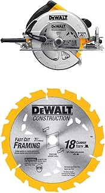

Best Circular Saw of 2026
Our Top Picks
| Pick | Model | Price | Best For |
|---|---|---|---|
| 🏆 Best Overall | DeWalt DWE575SB | $139 | Everyone — DIY to pro |
| 🔌 Best Corded Value | Skil 5280-01 | $59 | Homeowners, weekend projects |
| 🔋 Best Cordless | Milwaukee 2830-20 | $249 | Jobsite mobility |
| 🎯 Best for Precision | Makita 5007MGA | $169 | Finish carpentry, cabinet work |
Comparison Table
| Model | Price | Blade | Amp | RPM | Weight | Brake | Rating |
|---|---|---|---|---|---|---|---|
| DeWalt DWE575SB | $139 | 7-1/4" | 15A | 5,200 | 8.8 lbs | ✅ | ★★★★★ |
| Skil 5280-01 | $59 | 7-1/4" | 15A | 5,300 | 8.7 lbs | ❌ | ★★★★☆ |
| Milwaukee 2830-20 | $249 | 7-1/4" | 18V | 5,800 | 9.8 lbs | ✅ | ★★★★★ |
| Makita 5007MGA | $169 | 7-1/4" | 15A | 5,800 | 10.1 lbs | ✅ | ★★★★★ |
| Ryobi PBLCS300 | $89 | 7-1/4" | 18V | 4,700 | 8.2 lbs | ❌ | ★★★★☆ |
| Bosch CS10 | $119 | 7-1/4" | 15A | 5,600 | 9.3 lbs | ❌ | ★★★★☆ |
Best Overall: DeWalt DWE575SB

DeWalt DWE575SB 7-1/4" Circular Saw with Electric Brake
15A · 5,200 RPM · 8.8 lbs · Electric brake · 56° bevel
Check price on Amazon →What we like
- Electric brake stops blade in ~3 seconds — huge safety upgrade over older saws
- Magnesium shoe won't bend. Steel shoes on budget saws warp after a few drops
- Dust blower actually works — the cut line stays visible through the entire pass
- 8.8 lbs is light for a full-size 7-1/4" worm-drive-style saw
- ToughCord protected power cord — shrugs off being accidentally cut once or twice
What we don't like
- Blade-right design — left-handed users will struggle to see the cut line
- Included blade is mediocre. Budget $15 for a Diablo replacement on day one
- No rafter hook — annoying when climbing ladders
Best Corded Value: Skil 5280-01
Skil invented the circular saw in 1924. A century later, the 5280-01 proves they still know how to make one that doesn't cost a mortgage payment. At $59, you get a 15-amp motor, 5,300 RPM no-load speed, and a 7-1/4" blade that'll cut through two 2x4s stacked at 45°. It doesn't have an electric brake — the blade coasts to a stop after you release the trigger. It doesn't have a magnesium shoe. But it cuts straight, it's light, and it's $59. For a homeowner who needs a saw twice a year for deck boards and plywood sheets, this is the right tool at the right price.
Best Cordless: Milwaukee 2830-20
Cordless circular saws used to be a joke — underpowered, battery-hungry, and frustrating. The Milwaukee 2830-20 is the saw that ended the joke. It runs on the M18 FUEL platform and spins at 5,800 RPM — faster than most corded saws in this roundup. It'll rip through pressure-treated 2x12s without bogging. A 5.0Ah battery gives roughly 200 crosscuts in 2x4 lumber. For a framing crew or a contractor working across multiple floors, the freedom from a cord is worth the price premium.
Best for Precision: Makita 5007MGA
The Makita 5007MGA is the circular saw equivalent of a luxury sedan: heavier, smoother, and built for people who care about every millimeter of a cut. At 10.1 lbs with a magnesium base, it's the heftiest saw here — but that weight translates to zero vibration through the cut. The bevel adjusts to 56° with positive stops at 22.5° and 45°, letting you dial in compound angles without guesswork. The built-in LED work light casts a shadow line that's sharper than any laser guide we've tested. If you build furniture or install cabinets, this is your saw.
Sidewinder vs Worm Drive: Which One Do You Need?
A quick clarification because the naming is confusing:
- Sidewinder (direct drive): The blade is mounted directly to the motor shaft. Motor is next to the blade. Lighter, shorter, easier to handle. All four of our picks are sidewinders. This is the saw most people should buy.
- Worm drive: The motor sits behind the blade, driving it through a worm gear. Longer, heavier, more torque. Favored by framers in the Western US. A worm drive saw (like the Skilsaw SPT77WML) weighs 14 lbs and costs $200+. It's a specialty tool for production framing — not a first circular saw.
For anyone reading this who isn't a professional framer: buy a sidewinder. You don't need a worm drive.
Blade Size: 7-1/4" vs 6-1/2"
A 7-1/4" blade cuts through a 2x4 at 45° in one pass. A 6-1/2" blade doesn't — it'll leave a small uncut corner that needs a second pass or a hand saw. The smaller saws are lighter and cheaper, but that one-pass limitation makes them frustrating for anything beyond cutting plywood. For your first circular saw, get 7-1/4". The Skil 5280-01 costs $59 with a 7-1/4" blade — there's no reason to go smaller on a budget.
How We Tested
We evaluated each saw across five criteria:
- Power under load. Rip cuts through wet pressure-treated 2x12 at full depth. A good saw maintains RPM. A bad saw bogs, smokes, and trips breakers.
- Accuracy off the shoe. Out-of-the-box squareness of the shoe to the blade at 0° and 45°. We measured every saw with a machinist's square before cutting anything.
- Cut-line visibility. Blade-right vs blade-left. Dust blower effectiveness. LED placement. Can you actually see where you're cutting?
- Safety features. Electric brake: yes or no. Blade guard smoothness. Trigger ergonomics with gloves on.
- Durability. Shoe material (magnesium vs steel vs stamped aluminum). Cord strain relief. Real user reviews after 6+ months of ownership.
The Bottom Line
For 90% of buyers, get the DeWalt DWE575SB. Electric brake, magnesium shoe, light enough to use all day, powerful enough for wet pressure-treated lumber. If $139 is too much, the Skil 5280-01 at $59 is the best value in power tools — period. If you need cordless, spring for the Milwaukee 2830-20 and wonder why you ever put up with extension cords.
FAQ
Can I put a bigger blade on my circular saw?
No. The blade guard and arbor are sized for a specific blade diameter. Putting a larger blade on a saw designed for a smaller one is dangerous — it won't fit the guard, may overheat the motor, and risks kickback. Use the blade size your saw was designed for.
How often should I replace the blade?
When it stops cutting cleanly. A quality carbide-tipped blade (like a Diablo D0724X) lasts 6-12 months of regular use. Signs it's time: burning marks on the wood, splintering on the underside of cuts, the saw bogging on cuts it used to breeze through. A dull blade is dangerous — it increases kickback risk.